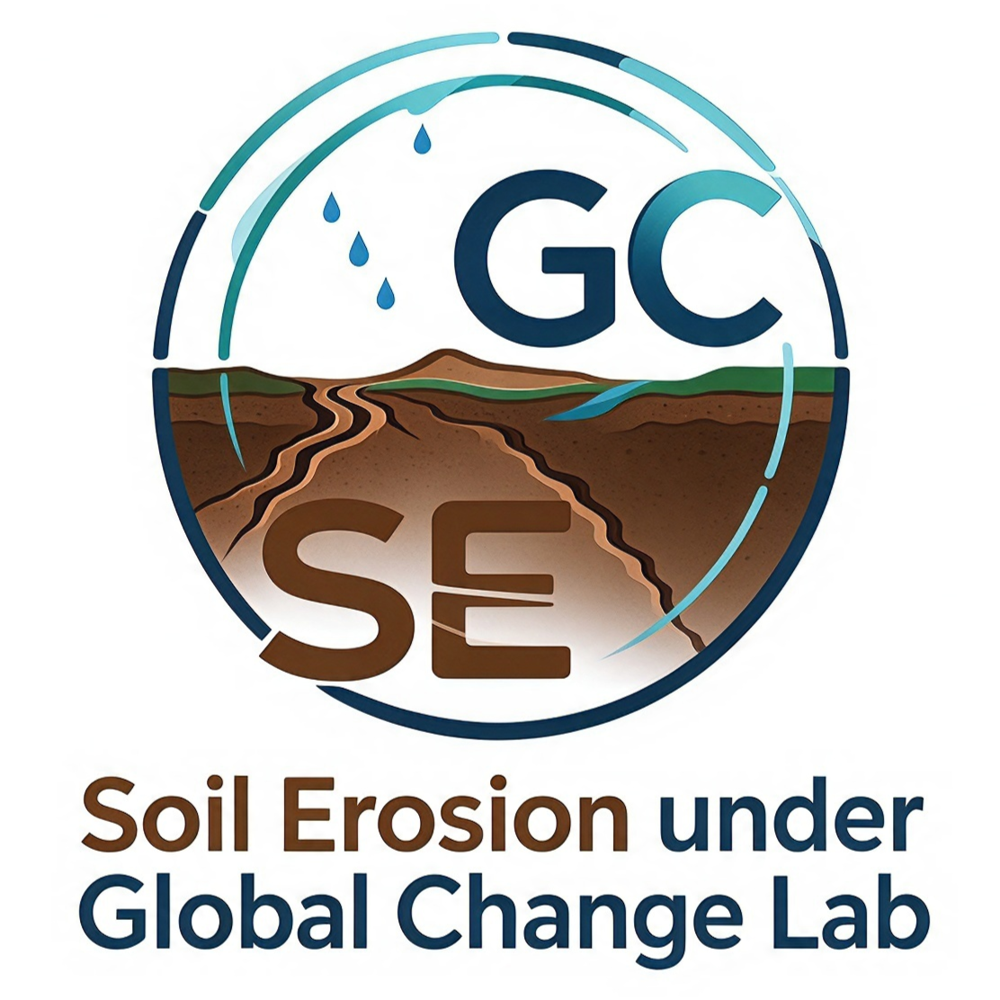

Dr. Ximeng Xu 徐锡蒙
Key Laboratory of Water Cycle and Related Land Surface Processes
Institute of Geographic Sciences and Natural Resources Research,CAS
No. 11A, Datun Road, Chaoyang District, Beijing 100101, China
中国科学院地理科学与资源研究所，陆地水循环及地表过程重点实验室
地址：北京市朝阳区大屯路甲11号，邮编：100101

Education & Experience
西北农林科技大学 创新实验学院（本科） 水土保持研究所（博士）
Major: Soil and Water Conservation and Desertification Control. Ph.D. thesis 'Ephemeral Gully Erosion Processes based on Different Erosive Force Factors and Numerical Simulation of Ephemeral Gully Flow' was granted as outstanding Ph.D. thesis.
专业：水土保持与荒漠化防治，论文“基于不同侵蚀动力因子的浅沟侵蚀过程与浅沟水流数值模拟”获优秀博士学位论文
美国农业部国家泥沙实验室&国家水科学计算与工程中心，国家留学基金委资助联合培养博士研究生
Research topics: soil pipe erosion, sediment transport capacity of pipe flow, gully headcut migration and sidewall expansion
研究主题：土壤管道侵蚀、管道流输沙能力、沟头溯源和沟壁扩张
中国科学院地理科学与资源研究所
Research Interests: Soil Erosion Evolution and its Catastrophic Processes under Global Change
1) Better understand soil erosion processes and mechanisms to improve soil erosion prediction models and support optimized erosion control practices;
2) Evaluate the impacts of natural and anthropogenic global change on soil erosion to reveal evolution trends and inform relevant policy formulation;
3) Develop monitoring and forecasting systems for erosion-induced hydrological extremes of floods and droughts to facilitate disaster risk mitigation.
研究方向：全球变化下的土壤侵蚀灾变过程
Selected Publications
Projects
Quantitative expression of ephemeral gully development process on Loess slope and sediment continuity equation construction, National Natural Science Foundation of China (42277339), 2023.1-2026.12
Ecological hydrological model and flood and drought disaster risk assessment in the middle reaches of the Yellow River under changing environment, National Natural Science Foundation of China (U2243226), 2023.1-2026.12
Impact of human activities on watershed water resources on the northern slope of Tianshan Mountains, The Third Xinjiang Scientific Expedition Program (No. 2021xjkk0805), 2021.11-2024.10
Development of raindrop spectrum monitoring function of artificial rainfall and runoff erosion simulation system, Technical Innovation Project of Instrument and Equipment Function Development of CAS (2021000471), 2021.9-2023.12
Rock fragment impact on slope surface runoff field and erosion-depositional characteristics in rocky mountain areas of north China, National Natural Science Foundation of China (41907060), 2020.1-2022.12
Posts & Notes
News
最新动态
Publications
2026
- 82. 徐锡蒙, 梁雯倩, 郑粉莉. 2026. 土壤管道侵蚀研究进展与未来展望. 土壤学报, 63(4), 1018-1030.https://doi.org/10.11766/trxb202507020322
- 81. Wang, C., Zheng, F., Xu, X., Liu, L., Zhao, L., Qin, C. (2026). Effects of rainfall, surface inflow and seepage on ephemeral gully erosion process under contour tillage in the Chinese Mollisol region. Geoderma, 472, 117924. https://doi.org/10.1016/j.geoderma.2026.117924
- 80. Wu, B., Zheng, F., Xu, X., Fu, Y., Flanagan, D. C., Li, R., ... & Fu, J. (2026). Assessments of gully erosion susceptibility in typical thick-layer Mollisol region of Northeast China. Soil and Tillage Research, 263, 107277.
- 79. Qin, C., Wang, Z., Cao, L., Xu, X., Xue, Y., Liu, H., & Zheng, F. (2026). Decoding channel widening dynamics: Linking hydraulic forcing and soil resistance through time-continuous prediction. Catena, 268, 110034.
- 78. Wu, B., Zheng, F., Fu, Y., Peng, S., & Xu, X. (2026). Too fast to balance? past trends and multi-scenario of land use intensity and landscape ecological risk in China. Journal of Cleaner Production, 560, 148349.
- 77. Qiuyu Xie, Qianxi Yang, Ximeng Xu*. 2026. Past-to-future spatiotemporal dynamics and nonlinear driving mechanisms of habitat quality in the middle reaches of the Yellow River Basin. Ecological Frontiers, 46(5), 1729-1738. https://doi.org/10.1016/j.ecofro.2026.03.003
- 76. 徐锡蒙, 杨千僖. 2026. 基于多源卫星数据的黄河中游降雨侵蚀力时空分异特征. 中国水土保持科学, 24(3), 31-41.https://doi.org/10.16843/j.sswc.2025349
- 75. Wang, Z., Li, J., Guan, Y., Xu, X., Yao, H., Mai, X., ... & Xing, J. (2026). Assessing the spatiotemporal patterns and driving factors of water erosion in the Ganges-Brahmaputra-Meghna River Basin based on RUSLE-Geodetector. Journal of Mountain Science, 23(7), 3139-3154. https://doi.org/10.1007/s11629-025-0207-y
- 74. Yong Han, Qiannan Yang, Ximeng Xu*, Zhanbin Li. 2026. Flood Event Sediment Load Dynamics and Their Influencing Factors in the Dali River Basin on the Loess Plateau, China. Hydrological Processes, 40(2), e70434. https://doi.org/10.1002/hyp.70434
- 73. Ximeng Xu. 2026. Rainfall Erosivity Variations and Their Relationship with Sediment Delivery Changes in the Lancang River Basin. Hydrology, 13(1), 33. https://doi.org/10.3390/hydrology13010033
- 72. Shi, H., Zheng, F., Sheng, J., Yang, X., Liang, R., Wang, L., & Xu, X. (2026). Long slope erosion-deposition patterns under different tillage systems driven by multiple erosion forces in the Chinese Mollisol region. Soil and Tillage Research, 255, 106821.
- 71. Gaffney, P. P., Tang, Q., Wang, J., Zhang, C., Xu, X., Zhang, R., Yin, T., Li, Y., Ge, M., Xu, X., Wu, F., Zhou, Y., Li, Q., & Ratcliffe, J. L. (2026). Ecohydrological resilience to short-term warming in a high-altitude peatland under different water table levels. Environmental Impact Assessment Review, 116, 108065.
2025
- 70. Wenqian, Liang., Ximeng Xu*, Fenli Zheng, Chao Qin. 2025. Ephemeral gully evolution and morphological changes in the erosion-tillage-erosion cycle on steep loess slopes. Catena, 258, 109257. https://doi.org/10.1016/j.catena.2025.109257
- 69. Qianxi Yang, Qiuyu Xie, Ximeng Xu*. 2025. Reliability of Satellite Data in Capturing Spatiotemporal Changes of Precipitation Extremes in the Middle Reaches of the Yellow River Basin. Remote Sensing, 17(19), 3308. https://doi.org/10.3390/rs17193308
- 68. Wenqian Liang, Ximeng Xu*, Fenli Zheng. 2025. Step-pool morphology in ephemeral gullies on steep slopes of the Loess Plateau: comparisons with other linear erosion features. Geomorphology, 110007. https://doi.org/10.1016/j.geomorph.2025.110007
- 67. Qianxi Yang, Ximeng Xu*, Qiuhong Tang*, Guoqiang Jia. 2025. The spatiotemporal variations of global rainfall erosivity and erosive rainfall event based on half-hourly satellite rainfall data. Catena, 252, 108831. https://doi.org/10.1016/j.catena.2025.108831
- 66. Shi, H., Zheng, F., Li, X., Peng, S., Flanagan, D. C., Xu, X., & Liu, G. (2025). Responses of slope erosion-deposition distributions to contour ridge tillage and gentle slope terracing in the Mollisol region: A case study in Northeast China. International Soil and Water Conservation Research. 100591. https://doi.org/10.1016/j.iswcr.2025.10.007
- 65. Wang, L., Zheng, F., Xu, X., Flanagan, D. C., Wang, L., Wang, X., Shi, H., Zhang, F. (2025). Effects of rainfall intensity and kinetic energy on hillslope soil erosion in the thin-layer Mollisol region of China: Field observation and rainfall simulation. International Soil and Water Conservation Research. 100581. https://doi.org/10.1016/j.iswcr.2025.09.013
- 64. Liu, B., Yun, X., Pan, B., Xu, X., Gaffney, P. P., Lu, H., ... & Tang, Q. (2025). Assess the impacts of climatic change and human activities on streamflow and floods by using a hybrid-physics-data (HPD) model: A case study in the Lancang-Mekong River Basin. Journal of Hydrology: Regional Studies, 61, 102763.
- 63. Liu, B. X., Tang, Q. H., Xu, X. M., Sun, S. A., Chen, D., Luan, J. K., & Ren, H. Y. (2025). Evaluating ISIMIP3b bias-corrected data for precipitation extremes in China during 1981‒2100. Advances in Climate Change Research. 16(5): 974-984. https://doi.org/10.1016/j.accre.2025.08.005
- 62. Gaffney, P. P., Tang, Q., Wang, J., Zhang, C., Xu, X., Xu, X., Li, Y., Pap, S., Ratcliffe, J., Li, Q., & Niu, S. (2025). The high-altitude peatland carbon cycle: A review of the impacts of climate and land-use change. Geography and Sustainability, 100353. 6(6): 100353. https://doi.org/10.1016/j.geosus.2025.100353
- 61. Zhao, L., Zheng, F., Zhao, T., Xu, X., Wang, X., Shi, H., Wang, L., & Wu, B. (2025). Impacts of topography on the morphological indices of ephemeral gullies in the Chinese mollisol region. International Soil and Water Conservation Research, 13(2), 263-276. https://doi.org/10.1016/j.iswcr.2024.11.003
- 60. Xue, Q., He, L., Tang, Q., Xu, X., Chen, D., Wright, N. G., ... & Tang, Y. (2025). Planform change and its delayed response to discharge in an active braided river reach: Majuli Island Reach of the Brahmaputra River. Remote Sensing, 17(6), 944.
- 59. Reda, K. W., Liu, X., Tang, Q., Gaffney, P. P., & Xu, X. (2025). Quantification of climate change impact on hydrological extremes in the Upper Tekeze basin in the future with two ensemble strategies. Theoretical and Applied Climatology, 156(3), 173.
- 58. 汤秋鸿, 徐锡蒙, 周羽暄, 等. 全球变化背景下黄河流域水旱灾害演变及应对策略. 水利发展研究, 2025, 25(2): 13-20.
Papers Before 2025
- 57. Shi, H., Zheng, F., Zhao, T., Xu, X., & Liu, G. (2024). Impacts of straw mulching in longitudinal furrows on hillslope soil erosion and deposition in the Chinese Mollisol region. Soil and Tillage Research, 243, 106178.
- 56. Shiyu Wang, Ximeng Xu*. 2024. Spatiotemporal variation in soil wind erosion in the northern slope of the Tianshan Mountains from 2000 to 2018. Land, 13(10), 1604. https://doi.org/10.3390/land13101604
- 55. Wang, Z., Liu, H., Qin, C., Wells, R. R., Cao, L., Xu, X., ... & Zheng, F. (2024). Laboratory channel widening quantification using deep learning. Geoderma, 450, 117034.
- 54. Wang, Y., An, X., Zheng, F., Wang, X., Wang, B., Zhang, J., Xu, X., Yang, W., & Feng, Z. (2024). Effects of soil erosion–deposition on corn yields in the Chinese Mollisol region. Catena, 240, 108001.
- 53. Gaffney, P. P., Tang, Q., Li, Q., Zhang, R., Pan, J., Xu, X., ... & Niu, S. (2024). The impacts of land‐use and climate change on the Zoige peatland carbon cycle: A review. Wiley Interdisciplinary Reviews: Climate Change, 15(1), e862.
- 52. Baniya, B., Tang, Q. H., Neupane, B., Xu, X. M., He, L., Adhikari, T. R., ... & Dhital, Y. P. (2023). Rainfall erosivity and sediment dynamics in the Himalaya catchment during the Melamchi flood in Nepal. Journal of Mountain Science, 20(10), 2993-3009.
- 51. Zhao, Y., Zheng, R., Zheng, F., Zhong, K., Fu, J., Zhang, J., Flanagan, D., Xu, X., Li, Z. (2023). Spatiotemporal distribution of agrometeorological disasters in China and its impact on grain yield under climate change. International Journal of Disaster Risk Reduction, 95, 103823.
- 50. 汤秋鸿, 徐锡蒙, 贺莉, 彭守璋, 胡亚伟, 靳晓辉, 樊玉苗, 祝欣荣, 邓浩鑫, 杨淋, 王志慧. 黄河中游生态水文模型及洪旱灾害风险评估. 地理学报, 2023, 78(7): 1666-1676 https://doi.org/10.11821/dlxb202307008
- 49. Ximeng Xu, Xiaobo Yun, Qiuhong Tang, Huijuan Cui, Jie Wang, Lu Zhang, Deliang Chen. 2023. Projected seasonal changes in future rainfall erosivity over the Lancang-Mekong River basin under the CMIP6 scenarios. Journal of Hydrology, 620, 129444. https://doi.org/10.1016/j.jhydrol.2023.129444
- 48. Zhong, K., Zheng, F., Liu, G., Zhang, X., Qin, C., & Xu, X. (2023). Effects of variations in precipitation extremes on sediment load in the Second Songhua River Basin, Northeast China. Journal of Soils and Sediments, 23(4), 1971-1984.
- 47. Deng, H., Tang, Q., Yun, X., Tang, Y., Liu, X., Xu, X., Sun, S., Zhao, G., Zhang, Y., Zhang, Y. 2022. Wetting trend in Northwest China reversed by warmer temperature and drier air. Journal of Hydrology, 613, 128435. https://doi.org/10.1016/j.jhydrol.2022.128435
- 46. Wang, J., Tang, Q., Chen, A., Tang, Y., Xu, X., Yun, X., Mu, M., Wright, N. & Chen, D. 2022. Impacts of Summer Monsoons on flood characteristics in the Lancang-Mekong River Basin. Journal of Hydrology, 604, 127256. https://doi.org/10.1016/j.jhydrol.2021.127256
- 45. Ximeng Xu, Fenli Zheng, Qiuhong Tang, Glenn V. Wilson, Min Wu, Yong Han, Peiqing Xiao, Xunchang J. Zhang. 2022. Upslope sediment-laden flow impacts on ephemeral gully erosion: Evidences from field monitoring and laboratory simulation. Catena, 209, 105802. https://doi.org/10.1016/j.catena.2021.105802
- 44. Ximeng Xu, Qiuhong Tang. 2021.Meteorological disaster frequency at prefecture-level city scale and induced losses in mainland China during 2011–2019. Natural Hazards, 109(1), 827-844. https://doi.org/10.1007/s11069-021-04858-8
- 43. Ximeng Xu, Qiuhong Tang. 2021. Spatiotemporal variations in damages to cropland from agrometeorological disasters in mainland China during 1978–2018. Science of the Total Environment, 785, 147247. https://doi.org/10.1016/j.scitotenv.2021.147247
- 42. Ximeng Xu, Fenli Zheng, Glenn V. Wilson. 2021. Flow hydraulics in an ephemeral gully system under different slope gradients, rainfall intensities and inflow conditions. Catena, 203, 105359. https://doi.org/10.1016/j.catena.2021.105359
- 41. Liu, G., Zheng, F., Wilson, G. V., Xu, X., & Liu, C. 2021. Three decades of ephemeral gully erosion studies. Soil and Tillage Research, 212, 105046. https://doi.org/10.1016/j.still.2021.105046
- 40. Yuanyuan Zhou, Dongjie Fu, Chunxia Lu, Ximeng Xu, Qiuhong Tang. 2021. Positive effects of ecological restoration policies on the vegetation dynamics in a typical ecologically vulnerable area of China. Ecological Engineering, 159, 106087. https://doi.org/10.1016/j.ecoleng.2020.106087
- 39. Zhong, K., Zheng, F., Zhang, X., Qin, C., Xu, X., Lalic, B., & Ćupina, B. (2021). Dynamic changes in snowfall extremes in the Songhua River Basin, Northeastern China. International Journal of Climatology, 41(1), 423-438.
- 38. 运晓博, 汤秋鸿, 徐锡蒙, 周园园, 刘星才, 王杰, 孙思奥. (2020). 气候变化对澜湄流域上下游水资源合作潜力的影响. 气候变化研究进展, 16 (5): 555-563. https://doi.org/10.12006/j.issn.1673-1719.2020.008
- 37. Ximeng Xu, Fenli Zheng*, Glenn V. Wilson, Qiuhong Tang. 2020. The role of soil pipe and pipeflow in headcut migration processes in loessic soils. Earth Surface Processes and Landforms, 45(8): 1749-1763. https://doi.org/10.1002/esp.4843
- 36. G. G. Haile, Qiuhong Tang, Seyed Hosseini, Xingcai Liu, T. G. Gebremicael, Guoyong Leng, Asfaw Kebede, Ximeng Xu, Xiaobo Yun. 2020. Projected impacts of climate change on drought patterns over East Africa. Earth's Future, https://doi.org/10.1029/2020EF001502
- 35. Guoqiang Jia, Qiuhong Tang, Ximeng Xu. 2020. Evaluating the performances of satellite-based rainfall data for global rainfall-induced landslide warnings. Landslides, 17: 283–299. https://doi.org/10.1007/s10346-019-01277-6
- 34. Binod Baniya, Qiuhong Tang, Yadu Pokhrel, Ximeng Xu. 2019. Vegetation Dynamics and Ecosystem Service Values Changes at National and Provincial Scales in Nepal from 2000 to 2017. Environmental Development, 32, 100464. https://doi.org/10.1016/j.envdev.2019.100464
- 33. Binod Baniya, Qiuhong Tang, Ximeng Xu, Gebremedhin Gebremeskel Haile, Gyan Chhipi-Shrestha. 2019. Spatial and temporal variation of drought based on satellite derived vegetation condition index in Nepal from 1982–2015. Sensors, 19(2): 430.
- 32. Ximeng Xu, Fenli Zheng, Glenn V. Wilson, Xunchang J. Zhang, Chao Qin, Xu He. 2019. Quantification of upslope and lateral inflow impacts on runoff discharge and soil loss in ephemeral gully systems under laboratory conditions. Journal of Hydrology, 579, 124174. https://doi.org/10.1016/j.jhydrol.2019.124174
- 31. 徐锡蒙, 郑粉莉, 韩勇, 覃超. 2019. 黄土丘陵沟壑区浅沟发育动态监测与形态定量研究. 农业机械学报, 50(4): 274-282. https://doi.org/10.6041/j.issn.1000-1298.2019.04.031
- 30. Ximeng Xu, Qiuhong Tang. 2019. Lidar and photogrammetry approaches for monitoring land surface morphology in ephemeral gully system. Int. Arch. Photogramm. Remote Sens. Spatial Inf. Sci., XLII-4/W18. https://doi.org/10.5194/isprs-archives-XLII-4-W18-1065-2019
- 29. Tang Q H, Lan C, Su F G, Liu X C, Sun H, Ding J, Wang L, Leng G Y, Zhang Y Q, Sang Y F, Fang H Y, Zhang S F, Han D M, Liu X M, He L, Xu X M, Tang Y, Chen D L. 2019. Streamflow change on the Qinghai-Tibet Plateau and its impacts (in Chinese). Chin Sci Bull, 64: 2807–2821, https://doi.org/10.1016/10.1360/TB-2019-0141
- 28. Chao Qin, Robert R. Wells, Henrique G. Mommd, Ximeng Xu, Glenn V. Wilson, Fenli Zheng. 2019. Photogrammetric analysis tools for channel widening quantification under laboratory conditions. Soil & Tillage Research, 191: 306-316.
- 27. Chao Qin, Fenli Zheng, Glenn V. Wilson, Xunchang J. Zhang, Ximeng Xu. 2019. Apportioning contributions of individual rill erosion processes and their interactions on loessial hillslopes. Catena, 181: 104099.
- 26. Ximeng Xu, Fenli Zheng, G.V. Wilson, Chao He, Jia Lu, Feng Bian. 2018. Comparison of runoff and soil loss in different tillage systems in the Mollisol region of Northeast China. Soil & Tillage Research, 177: 1-11. https://doi.org/10.1016/j.still.2017.10.005
- 25. Hongyan Wu, Ximeng Xu, Fenli Zheng, Chao Qin, Xu He. 2018. Gully morphological characteristics in the loess hilly‐gully region based on 3D laser scanning technique. Earth Surface Processes and Landforms, 43: 1701-1710.
- 24. Chao Qin, Fenli Zheng, X.C. J. Zhang, Ximeng Xu, Gang Liu. 2018. A simulation of rill bed incision processes in upland concentrated flows. Catena, 165: 310-319.
- 23. Keyuan Zhong, Fenli Zheng, Ximeng Xu, Chao Qin. 2018. Discriminating the precipitation phase based on different temperature thresholds in the Songhua River Basin, China. Atmospheric Research, 205: 48-59.
- 22. Chao Qin, Fenli Zheng, R. R. Wells, Ximeng Xu, Bin Wang, Keyuan Zhong. 2018. A laboratory study of channel sidewall expansion in upland concentrated flows. Soil & Tillage Research, 178: 22-31.
- 21. Zhizhen Feng, Fenli Zheng, Wei Hu, Guifang Li, Ximeng Xu. 2018. Impacts of mollic epipedon thickness and overloaded sediment deposition on corn yield in the Chinese Mollisol region. Agriculture Ecosystems & Environment, 257: 175-182.
- 20. 王磊, 何超, 郑粉莉, 边锋, 覃超, 徐锡蒙. 2018. 黑土区坡耕地横坡垄作措施防治土壤侵蚀的土槽试验. 农业工程学报, 34(15): 141-148.
- 19. Chao Qin, Fenli Zheng, Ximeng Xu, Hongyan Wu, Haiou Shen. 2018. A laboratory study of rill network development and morphological characteristics on loessial hillslope. Journal of Soils and Sediments, 18: 1679-1690.
- 18. Ximeng Xu, Fenli Zheng, G.V. Wilson, Min Wu. 2017. Upslope inflow, hillslope gradient and rainfall intensity impacts on ephemeral gully erosion. Land Degradation & Development, 28: 2623-2635. https://doi.org/10.1002/ldr.2825
- 17. Ximeng Xu, Fenli Zheng, Chao Qin, Hongyan Wu, G.V. Wilson. 2017. Impact of cornstalk buffer strip on hillslope soil erosion and its hydrodynamic understanding. Catena, 149: 417-425. https://doi.org/10.1016/j.catena.2016.10.016
- 16. 徐锡蒙, 郑粉莉, 武敏. 2017. 雨强和坡度对黄土陡坡地浅沟形态特征影响的定量研究. 农业工程学报, 33(11): 124-132. https://doi.org/10.11975/j.issn.1002-6819.2017.11.016
- 15. Yong Han, Fenli Zheng, Ximeng Xu. 2017. Loess Plateau. Effects of rainfall regime and its character indices on soil loss at loessial hillslope with ephemeral gully. Journal of Mountain Science, 14(3): 527-538.
- 14. Keyuan Zhong, Fenli Zheng, Hongyan Wu, Chao Qin, Ximeng Xu. 2017. Dynamic changes in temperature extremes and their association with atmospheric circulation patterns in the Songhua river basin, China. Atmospheric Research, 190: 77-88.
- 13. 郑粉莉, 徐锡蒙, 覃超. 2016. 沟蚀过程研究进展. 农业机械学报, 47(8): 48-59.
- 12. Guifang Li, Fenli Zheng, Jia Lu, Ximeng Xu, Wei Hu, Yong Han. 2016. Inflow rate impact on hillslope erosion processes and flow hydrodynamics. Soil Science Society of America Journal, 80(3): 711.
- 11. 覃超, 郑粉莉, 徐锡蒙, 何煦. 2016. 基于立体摄影测量技术的细沟与细沟水流参数测量. 农业机械学报, 47(11):150-156.
- 10. 覃超, 吴红艳, 郑粉莉, 徐锡蒙, 边锋. 2016. 黄土坡面细沟侵蚀及水动力学参数的时空变化特征. 农业机械学报, 47(8): 146-154+207.
- 9. 吴红艳, 郑粉莉, 徐锡蒙, 覃超, 钟科元. 2016. 不同分辨率DEM提取切沟形态特征参数的转化研究. 水土保持学报, 2016, 30(6):147-152+161.
- 8. 边锋, 郑粉莉, 徐锡蒙, 卢嘉, 覃超, 吴红艳. 2016. 东北黑土区顺坡垄作和无垄作坡面侵蚀过程对比. 水土保持通报, 36(1):11-16.
- 7. 韩勇, 郑粉莉, 徐锡蒙, 盛贺伟. 2016. 子午岭林区浅层滑坡侵蚀与植被的关系——以富县"7·21"特大暴雨为例. 生态学报, 36(15): 4635~4643.
- 6. 覃超, 郑粉莉, 刘沛峰, 徐锡蒙, 吴红艳, 汪怡珂. 2017. 玉米秸秆汁土壤改良剂对黄绵土抗侵蚀能力的影响. 土壤学报, 54(2): 367-378.
- 5. 郑粉莉, 边锋, 卢嘉, 覃超, 徐锡蒙. 2016. 雨型对东北典型黑土区顺坡垄作坡面土壤侵蚀的影响. 农业机械学报, 47(2): 90-97.
- 4. 徐锡蒙, 郑粉莉, 吴红艳, 覃超. 2015. 玉米秸秆覆盖缓冲带对细沟侵蚀及其水动力学特征的影响. 农业工程学报, 31(24): 111-119. https://doi.org/10.11975/j.issn.1002-6819.2015.24.018
- 3. 徐锡蒙, 郑粉莉, 覃超, 吴红艳. 2015. 沟蚀发育的黄土坡面上秸秆覆盖防蚀效果研究. 农业机械学报, 46(8): 130-137. https://doi.org/10.6041/j.issn.1000-1298.2015.08.019
- 2. 徐锡蒙, 郑粉莉, 关颖慧, 姚亚庆, 覃超. 2015. 2013年我国地震灾害时空特征与灾害损失分析. 水土保持研究, 22(4): 321-325.
- 1. 覃超, 郑粉莉, 徐锡蒙, 吴红艳, 沈海鸥. 2015. 玉米秸秆缓冲带防治黄土坡面细沟侵蚀的效果. 中国水土保持科学, 13(1): 35-42.
Outcomes
论文以外的成果
科技奖项
- 1. 徐锡蒙（6/9），第十二届中国水土保持学会科学技术奖一等奖，典型黑土区土壤侵蚀退化过程及其调控，2021.1
- 2. 徐锡蒙（5/5），第十三届中国土壤学会科学技术奖二等奖，黑土侵蚀过程与土壤质量退化机理研究，2018.7
专著及章节
- 8. 郑粉莉, 徐锡蒙, 韩勇. 2023. 浅沟和切沟侵蚀研究. 科学出版社：北京.
- 7. Xu, X., Tang, Q. 2022. Water Erosion and Its Controlling Factors in the Anthropocene. In Q. Tang & G. Leng (Eds.), Climate Risk and Sustainable Water Management (pp. 82-109). Cambridge: Cambridge University Press. https://doi.org/10.1017/9781108787291.007
- 6. Ban, Y., Tang, Q., & Xu, X. 2022. Climate Warming Induced Frozen Soil Changes and the Corresponding Environmental Effect on the Tibetan Plateau: A Review. In Q. Tang & G. Leng (Eds.), Climate Risk and Sustainable Water Management (pp. 179-197). Cambridge: Cambridge University Press. https://doi.org/10.1017/9781108787291.012
- 5. Jia, G., Tang, Q., Gariano, S., Melillo, M., Xu, X., Leng, G., & Li, X. 2022. Broadening and Deepening the Rainfall-Induced Landslide Detection: Practices and Perspectives at a Global Scale. In Q. Tang & G. Leng (Eds.), Climate Risk and Sustainable Water Management (pp. 267-288). Cambridge: Cambridge University Press. https://doi.org/10.1017/9781108787291.016
- 4. Yun, X., Wang, J., Wu, H., Baniya, B., Lu, H., Sun, S., Xu, X., Liu, X., Tang, Q. 2022. Flooding Risk in the Lancang-Mekong River Basin under Global Change. In Q. Tang & G. Leng (Eds.), Climate Risk and Sustainable Water Management (pp. 29-46). Cambridge: Cambridge University Press. https://doi.org/10.1017/9781108787291.004
- 3. Hosseini-Moghari, S., Tang, Q., Leng, G., & Xu, X. 2022. Shrinking Lake Urmia: Causes, Future Projection and Implications. In Q. Tang & G. Leng (Eds.), Climate Risk and Sustainable Water Management (pp. 465-482). Cambridge: Cambridge University Press. https://doi.org/10.1017/9781108787291.025
- 2. Fenli Zheng, Chi-hua Huang, Ximeng Xu. 2017. Gulley Erosion. Encyclopedia of Soil Science. Third Edition. 1059-1063. CRC Press. https://doi.org/10.1081/E-ESS3-120053854
- 1. Fenli Zheng, Ximeng Xu, Xiubin He. 2017. Loess Plateau. Encyclopedia of Soil Science. Third Edition. 1370-1376. CRC Press. https://doi.org10.1081/E-ESS3-120053855.
授权发明专利
- 5. 土壤管道流输沙能力模拟试验装置及方法，2024.5.24，ZL202110017931.2
- 4. 一种基于卫星降水数据的降雨侵蚀力计算方法，2024.3.22，ZL202310991729.9
- 3. 一种水样含沙量测量装置及使用其的测量方法，2023.9.22，ZL202310249652
- 2. 一种高浓度径流泥沙样品自动采集系统，2023.9.12，ZL202211108997
- 1. 一种双目立体视觉精细地形测量系统及方法，2022.2.22，ZL202010529424.2
Resources
Dataset/Code/Link
- PFTCN: 1 km plant functional type dataset for China (2001–2022) with subdivided crops for the Simple Biosphere Model Version 4.2 (SiB4)
- Source code for: 1 km Plant Functional Type dataset for China (2001–2022) with subdivided crops
- 黄河中游2001-2020年降雨侵蚀力数据集
- GERD: Global rainfall erosivity and erosive rainfall event databases based on half-hourly satellite rainfall data